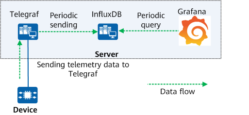

Overview of TIG
TIG is an open-source O&M tool that can collect telemetry data sent by devices, analyze the data, and display the data graphically. TIG represents three software components: Telegraf, InfluxDB, and Grafana, and can be installed on various platforms such as Linux, Windows, and Mac OS X.
- Telegraf is developed based on Go. It periodically executes the input plug-in to collect data. After being processed by the processing plug-in and aggregation plug-in, the data is exported to the data storage in batches. It establishes a gRPC connection with a device, collects and processes telemetry data, and saves the data to InfluxDB.
- InfluxDB is a time series database developed by InfluxData using the Go language. As a part of the TICK technology stack, InfluxDB uses the Time-Structured Merge Tree (TSM) engine to perform high-speed obtaining and data compression, provides high-performance write and query capabilities, and stores telemetry data.
- Grafana is a data visualization tool that extracts data from InfluxDB and displays the data in charts.
Figure 1 shows the TIG networking. Telegraf collects device data and periodically sends the data to InfluxDB. Grafana periodically queries data on InfluxDB and displays the data obtained from InfluxDB in charts.
Figure 1 TIG networking